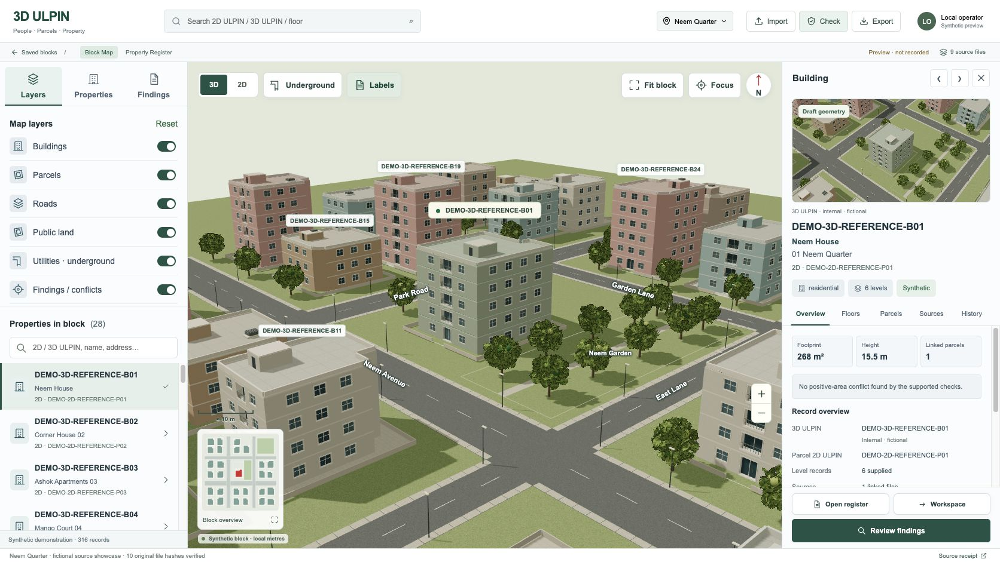
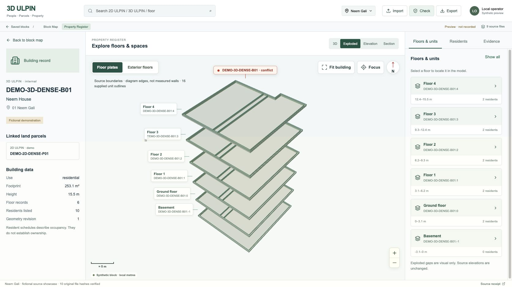
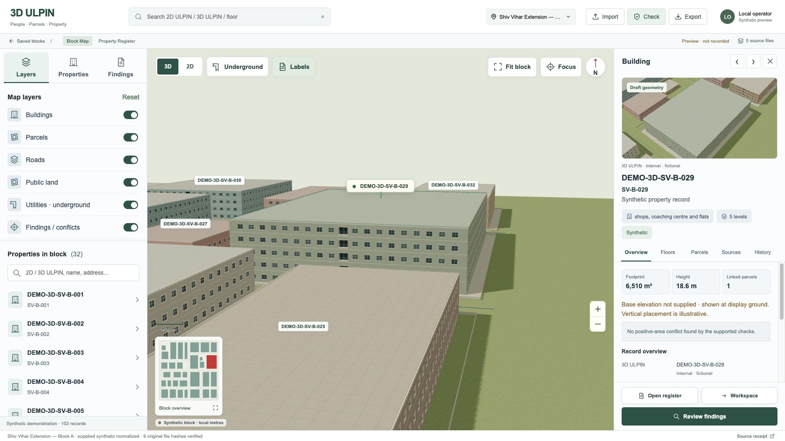

Actual product captures, 20 September 2026. The shared map reproduces the explorer/map/inspector composition and supports source shapes, floor plates and linked identities. It does not claim photographic or pixel parity. Window and roof decoration is a synthetic presentation layer; floor/unit boundaries come from source geometry.





Remaining visual differences: simplified procedural facades/landscape and sparse unit partitions where source geometry is absent. The calibrated plan workspace is a separate outstanding milestone. The current scene is a local preview, not a saved statutory record.